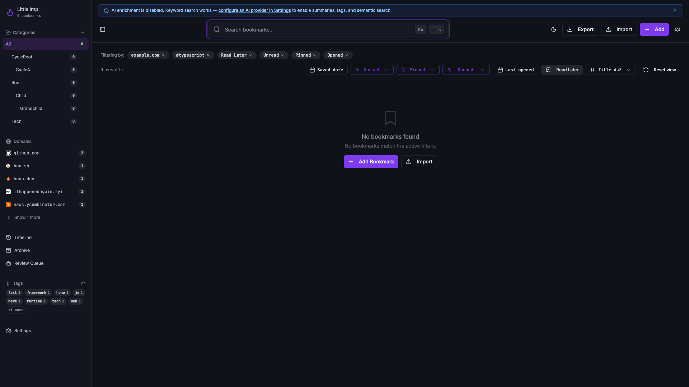
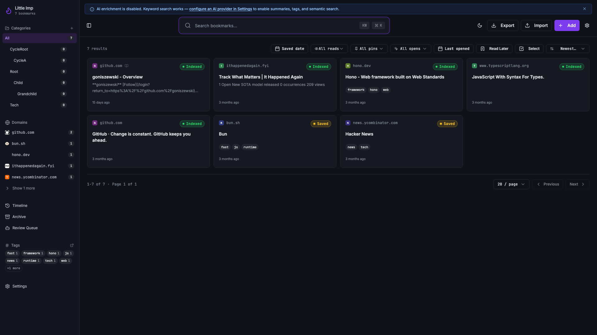
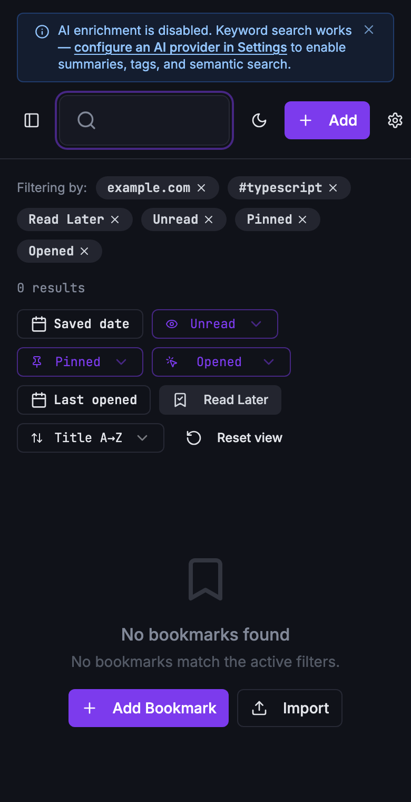

Little Imp Task Report
Persist Library View Preferences

Before
The library page held filter, sort, and page-size state only in React memory. Reloading the app returned to the default view, and there was no single command for returning a customized library view to first-run defaults.
Problem
TASK-117 needed local-only persistence for the library view while keeping shared links predictable. Saved local filters must not silently restore the current page or override explicit route filters such as /?tag=typescript.
Changes Added
- Added validated localStorage persistence under
little-imp-library-view-preferencesfor filters, sort, search mode, and page size. - Kept
pageOffsetout of saved preferences so every reload starts on the first page. - Kept bookmark view mode in the existing
little-imp-preferencesapp preference store. - Added a toolbar reset command that clears library preferences and resets bookmark view mode to grid.
- Changed tag URL hydration so explicit
/?tag=...links override local saved tag state without clearing saved preferences on ordinary root loads.
Result
Users can keep a preferred library working view across reloads, including dense parity filters and page size, without turning page number into hidden state. Shared tag links remain explicit, and reset returns the library to first-run defaults.
Verification
npm run test -- src/hooks/use-bookmarks.test.ts src/pages/Index.test.tsxpassed with 43 focused tests.npm run testpassed with 272 tests.npm run type-checkpassed for frontend and daemon TypeScript.npm run lintpassed with no errors and 8 existing Fast Refresh warnings.npm run test:e2epassed with 21 Chromium tests.npm run buildpassed with existing Browserslist and chunk-size warnings.git diff --checkpassed.- Browser verification opened
http://127.0.0.1:8080/, confirmed the reset control path, and reset the temporary viewport override. - Playwright screenshot capture produced desktop before/after and 390px narrow after states with no browser console errors.
Implementation Notes
The preference boundary is deliberately frontend-only. No daemon setting or API contract changed. The app stores only validated known enum values and real date strings, and removes the storage key again when preferences match the defaults. Review fixes separated explicit route tag filters into a transient override so later preference writes cannot serialize shared-link tag filters, and rejected rollover dates such as 2026-02-31.
Additional Screenshots


Files Changed
src/hooks/use-bookmarks.tssrc/hooks/use-bookmarks.test.tssrc/pages/Index.tsxsrc/pages/Index.test.tsxtasks/done/TASK-117-persist-library-view-preferences.mdtasks/README.md